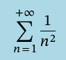
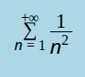

Back to home
A Note on TeX on This Site
The 'standard' way to render math on the web is by using a library like
MathJax or
KaTeX,
but I have some problems with this approach when it comes to this site.
First of all, I don't want to include a large, complex Javascript library
in my small, simple website. This site is also fully static, so
server-side rendering is off the table. I'm also not inclined to use any
kind of solution that introduces a compilation step — the HTML I
write should be the exact HTML that is served. Second, the standard way
to use these libraries is to either link a script hosted on another
domain or use some kind of JS package manager, neither of which I am
willing to do. It may be possible to download the required files and
serve them from my own domain, but this is surely not a simple process,
and it does not change the fact that it introduces complex scripts into
what should be a very simple and very light website.
Using a MathML-based solution with no external libraries presents its own
challenges. While MathML-Core is widely supported by modern browsers, the
way the content of the <math> element renders is not quite consistent.
For instance, here are two screenshots of the same MathML formula
displayed on two different browsers:


I also have concerns about the immaturity of MathML-Core, which,
well-supported as it may be, is a relatively young spec, no more than a
W3C Candidate Recommendation.
MathML3 has quite a few issues, hence the need for MathML-Core to exist
in the first place. I am not well-read on the differences between
MathML-Core and MathML3, or, indeed, on MathML in general — in fact
I know very little about the subject. For now, though, I do not trust in
enough in MathML's reliability and consistency to use it on this site.
Instead, I have chosen to include TeX formulas as SVG images. These
images are fairly small (This one:
 is 11.7kb. For reference, as of KaTeX v0.16.28, the
katex.min.js
file, representing a fraction of the memory footprint of using KaTeX, is
over 270kb). They will render quickly, consistently, and correctly in
almost all cases. Admittedly, the downsides of the SVG-based approach are
numerous. They are less accessible, being essentially invisible to
screen readers. They make it impossible to highlight or copy-and-paste
part of a formula. They don't play well with extensions that mess with
the CSS on the page, particularly 'dark mode' extensions. And, if they
are to be included statically, they must be generated by some external
tool. This is inconvenient, especially as it means that a brand new SVG
must be made every time a formula is tweaked even slightly.
is 11.7kb. For reference, as of KaTeX v0.16.28, the
katex.min.js
file, representing a fraction of the memory footprint of using KaTeX, is
over 270kb). They will render quickly, consistently, and correctly in
almost all cases. Admittedly, the downsides of the SVG-based approach are
numerous. They are less accessible, being essentially invisible to
screen readers. They make it impossible to highlight or copy-and-paste
part of a formula. They don't play well with extensions that mess with
the CSS on the page, particularly 'dark mode' extensions. And, if they
are to be included statically, they must be generated by some external
tool. This is inconvenient, especially as it means that a brand new SVG
must be made every time a formula is tweaked even slightly.
Despite its issues, I prefer the SVG-based solution to any of the
others I know of. It aligns best with the philosophy and design goals of
this site. Here are some notes on implementation:
-
The .svg files are given descriptive names and stored in the same
`resources/` directory as the rest of the non-HTML static content on
this site.
-
Having not set up a satisfactory command-line tool to turn TeX into
SVG, I have resorted to using a website, namely Thomas Lochmatter's
LaTeX to SVG page.
-
The .svg files are invoked using <img> elements with the TeX text
used to generate them as the alt text.
This solution is far from ideal, and will certainly have to evolve with
my needs, but my
first
couple
formula-heavy short pieces have come out looking fine.